Chapter 26 Introduction to Bayesian Estimation
In this section we will cover:
- Intro to Bayesian estimation
- Hypothesis testing and Bayes Factor
- Simple Linear Model in Bayesian Setting
- Visualisations for Bayes
- Other Extensions
26.1 Intro to Bayesian estimation
Before we get into R let us first provide an overview about the differences in thinking and how we approach probability and uncertainty in both frequentist and Bayesian settings. You may need to be equipped with the basics of probability and conditional probability to follow whats going on, but we will quickly overview those at the start.
You can find the slides here.
Now we have seen a bit of conceptual differences and concepts definitions we can finally try some staff in R. We try where possible use the examples from the chapter 2. In general, you find that the data we use is quite generic but that will hopefully help in communicating the concepts.
In R, there are quite a lot of ways to do Bayesian statistics. During past months the volume of resources have grown so it is quite easy to get lost in the abundance of packages and tutorials. Whether its a good news or bad news, its up to you to decide. In fact, depending on the modelling technique you want to use you may find that certain packages will be more useful than others. Here, we will review just a few, yet the ones we picked (‘bayesian inference’ (Hypothesis testing), ‘brms’ (Bayesian LMER), ‘BAS’(Bayesian LM) and ‘BayesFactor’ (Bayes ANOVA) ) are perhaps the most intuitive and easiest to navigate. We will provide few other recommendations at the end of the chapter.
26.1.1 Data sets
The data sets that we will need externally can be downloaded here.
We will start by getting some data in R and doing simple analysis. Most of our examples will be based on uniform priors. You will find that , especially, when working with more complex models you may need to have a very clear picture of prior distribution (i.e. fixed effects prior dist.) - these will require more advanced knowledge. Whilst we will not have a chance to cover those yet, please have a look at further resources at the end of the chapter where you can learn much more about those.
26.2 Bayes inference and one-sample t-test
Thanks to amazing package statsr it doesn’t take much effort for one to perform a quick bayesian inference analysis using a quick line of code.
We will use for calculating Credible Intervals and providing quick visualizations. Do not worry too much yet about all the parameters related to the type of distribution. We would like to start by working with some examples we already saw in part of the course and we will be mainly working with normal distributions conjugates.
library(statsr)We will use the example we had last week. Remember, we have generated the distribution of grades and we were testing the chances of observing various means under the null distribution:
grades<-c(63, 68, 72, 53, 43, 59, 56, 58, 76, 54, 46, 62, 58, 54, 45,
53, 82, 69, 51, 58, 45, 50, 60, 73, 62, 56, 60, 53, 61, 56,
43, 39, 61, 68, 60, 60, 58, 61, 63, 59, 58, 73, 54, 55, 57, 62, 71, 58, 84, 68)
grades<-as.data.frame(grades)
summary(grades)## grades
## Min. :39.00
## 1st Qu.:54.00
## Median :58.50
## Mean :59.36
## 3rd Qu.:62.75
## Max. :84.00The above summary is our data or evidence about grades that we collected this year and it will form our posterior probability distribution. We may all have some prior beliefs what it may look like and we can then change our mind if the evidence is far off from what we thought the grades will be. I personally expected grades to vary but mean would be somewhere around 60. Recall the ideas of elicitation we were considering earlier and how we should updated our self-elicit priors as we observe data.
grades_posterior = bayes_inference(y = grades, data = grades,
statistic = "mean", type = "ci", #use "ci' to calculate credible intervals
prior_family = "JZS", null=60, rscale = 1,
method = "simulation",
cred_level = 0.95)## Single numerical variable
## n = 50, y-bar = 59.36, s = 9.4906
## (Assuming Zellner-Siow Cauchy prior: mu | sigma^2 ~ C(60, 1*sigma)
## (Assuming improper Jeffreys prior: p(sigma^2) = 1/sigma^2
##
## Posterior Summaries
## 2.5% 25% 50% 75% 97.5%
## mu 56.55297521 58.3772633 59.292935 60.225940 61.97944
## sigma 7.99551401 9.0114549 9.667244 10.370244 11.99068
## n_0 0.06254174 0.7227023 1.797462 3.699337 10.39609
##
## 95% CI for mu: (56.553, 61.9794)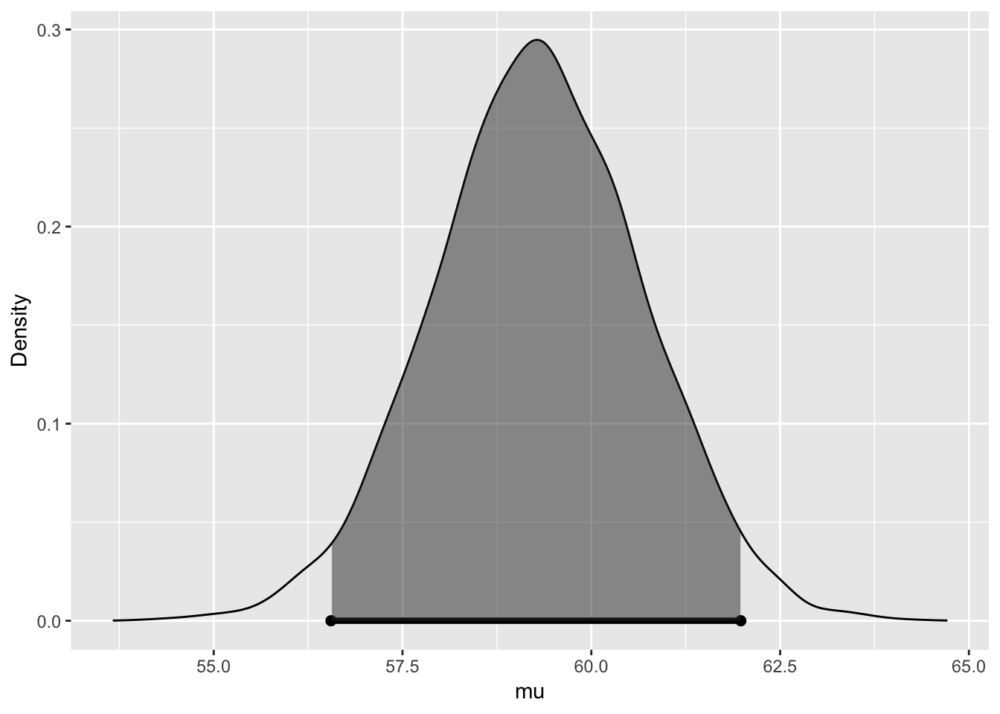
We can change now to hypothesis testing setting and vary our priors about the mean via null=....
grades_posterior = bayes_inference(y = grades, data = grades,
statistic = "mean", type = "ht", #ht allows to have a hypothsis testing setting
null=62,
alternative='twosided') ## Warning in if (is.na(which_method)) {: the condition has length > 1 and
## only the first element will be used## Single numerical variable
## n = 50, y-bar = 59.36, s = 9.4906
## (Using Zellner-Siow Cauchy prior: mu ~ C(62, 1*sigma)
## (Using Jeffreys prior: p(sigma^2) = 1/sigma^2
##
## Hypotheses:
## H1: mu = 62 versus H2: mu != 62
## Priors:
## P(H1) = 0.5 , P(H2) = 0.5
## Results:
## BF[H1:H2] = 1.4487
## P(H1|data) = 0.5916 P(H2|data) = 0.4084
##
## Posterior summaries for mu under H2:
## Single numerical variable
## n = 50, y-bar = 59.36, s = 9.4906
## (Assuming Zellner-Siow Cauchy prior: mu | sigma^2 ~ C(62, 1*sigma)
## (Assuming improper Jeffreys prior: p(sigma^2) = 1/sigma^2
##
## Posterior Summaries
## 2.5% 25% 50% 75% 97.5%
## mu 56.56991016 58.3768868 59.298353 60.218085 62.01873
## sigma 7.99309544 9.0195344 9.652150 10.359955 11.96532
## n_0 0.06482948 0.7369134 1.790951 3.631447 10.13694
##
## 95% CI for mu: (56.5699, 62.0187)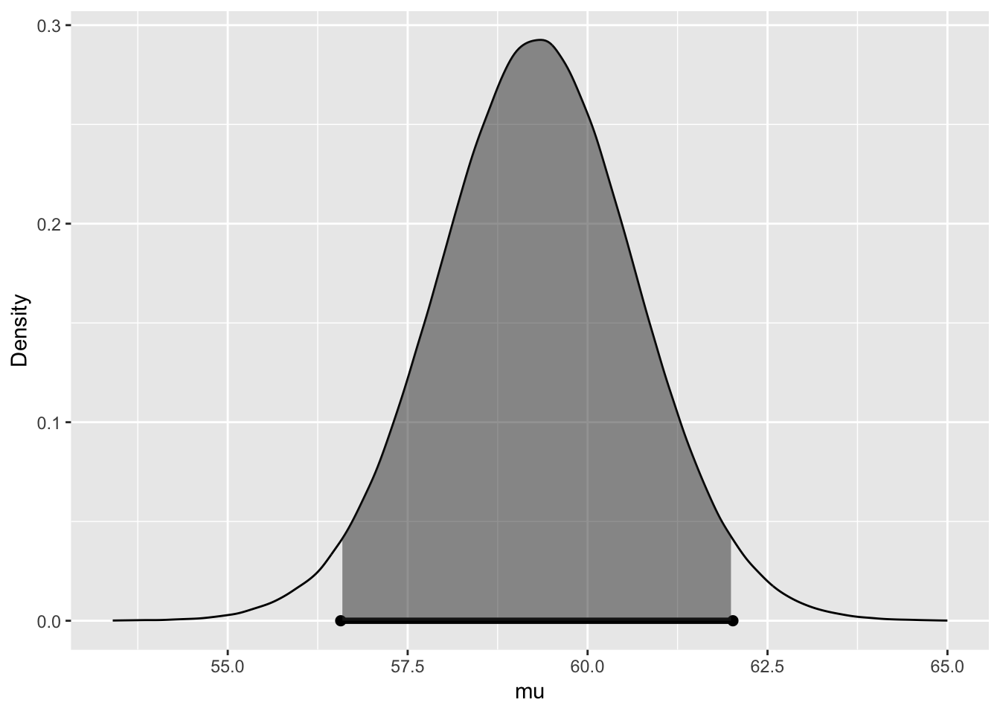
We can check what we have in store of the object, most of these are appearing above:
#Use names
names(grades_posterior) #check whats inside## [1] "hypothesis_prior" "order" "O"
## [4] "BF" "PO" "post_H1"
## [7] "post_H2" "mu" "post_den"
## [10] "cred_level" "post_mean" "post_sd"
## [13] "ci" "samples" "summary"
## [16] "plot"Unlike in frequents cases, our output would provide us with the overview of support for each of the competing hypothesis. In some applications, such results might be a more pragmatic way to comment on significance rather then using traditionally based on p-values. There is also no need to be bounded to the language of rejecting the null.
26.3 Difference between two groups’ means
We can use a simple example to show you how we can test for difference in two means using bayesian_inference. We can again use some data on the revenues of the books we were trying to sell from this course. We collected the data for two variables one will be our sales before running the course and one after, we want to check if there are significant differences. I got some data on our revenues before and after the course, I collected some priors about what people thought should happen - given that some did not really like our book and some thought that it will be sold out in no time :)
#Read the data in
revenue<-read.csv('revenue.csv')#Quick visualisation
library(ggplot2)
ggplot(revenue, aes(x = time, y = revenue)) +
geom_boxplot()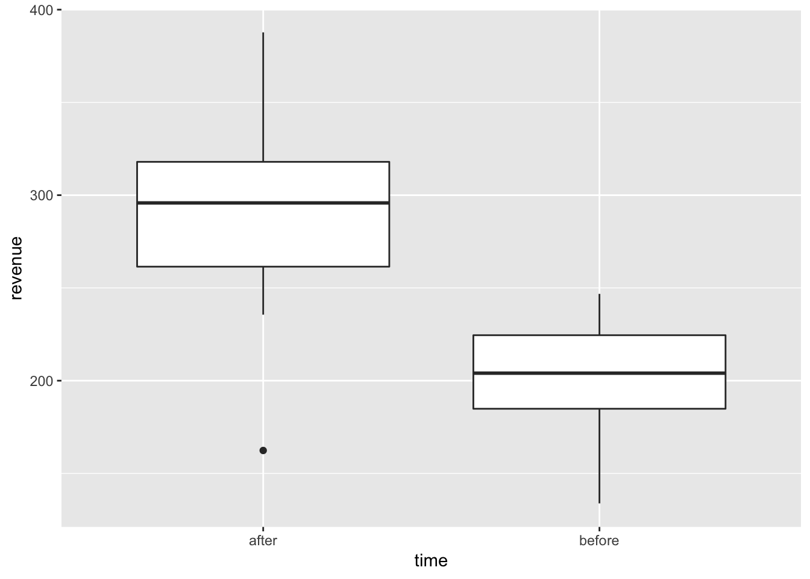 We did a bit better after the course finished. Looking at the visualisition, clearly, there are no overlaps and we should be fairly confidently observing differences in the revenues for these two groups.
#Run frequentist test first
t.test(revenue~time, data=revenue)##
## Welch Two Sample t-test
##
## data: revenue by time
## t = 9.0171, df = 48.446, p-value = 6.159e-12
## alternative hypothesis: true difference in means is not equal to 0
## 95 percent confidence interval:
## 71.14586 111.96683
## sample estimates:
## mean in group after mean in group before
## 293.3531 201.7967And now lets check what we get if we were to set a uniform prior and perform a Bayesian analysis instead, the competing hypotheses are:
\[ H_1: \mu_{\text{before}} = \mu_{\text{after}}\qquad \Longrightarrow \qquad H_1: \mu_{\text{diff}} = 0, \]
\[ H_2: \mu_{\text{before}} \neq \mu_{\text{after}}\qquad \Longrightarrow \qquad H_1: \mu_{\text{diff}} \neq 0, \]
bayes_inference(y = revenue, x = time, data = revenue,
statistic = "mean",
type = "ht", alternative = "twosided", null = 0, #null for hypothesis test
prior = "JZS", rscale = 1, # these are realted to our prior distribution (go with the defaul if working under normal)
method = "theoretical", # we can use quantile based inference or simulation ('simulation')
show_plot = TRUE) # we can hide plot if we want to## Response variable: numerical, Explanatory variable: categorical (2 levels)
## n_after = 30, y_bar_after = 293.3531, s_after = 47.257
## n_before = 30, y_bar_before = 201.7967, s_before = 29.3205
## (Assuming Zellner-Siow Cauchy prior on the difference of means. )
## (Assuming independent Jeffreys prior on the overall mean and variance. )
## Hypotheses:
## H1: mu_after = mu_before
## H2: mu_after != mu_before
##
## Priors: P(H1) = 0.5 P(H2) = 0.5
##
## Results:
## BF[H2:H1] = 5595513029
## P(H1|data) = 0
## P(H2|data) = 1
##
## Posterior summaries for under H2:
## Response variable: numerical, Explanatory variable: categorical (2 levels)
## n_after = 30, y_bar_after = 293.3531, s_after = 47.257
## n_before = 30, y_bar_before = 201.7967, s_before = 29.3205
## (Assuming Zellner-Siow Cauchy prior for difference in means)
## (Assuming independent Jeffrey's priors for overall mean and variance)
##
##
## Posterior Summaries
## 2.5% 25% 50% 75%
## overall mean 237.4241072 244.096652 247.56597 251.008586
## mu_after - mu_before 69.2984107 82.363588 89.48975 96.635845
## sigma^2 1119.8176265 1399.667812 1583.37722 1797.687180
## effect size 1.6034912 2.022579 2.25179 2.481296
## n_0 0.4548788 5.473153 13.63814 27.820123
## 97.5%
## overall mean 257.817907
## mu_after - mu_before 109.844025
## sigma^2 2333.783150
## effect size 2.914491
## n_0 80.015784
## 95% Cred. Int.: (69.2984 , 109.844)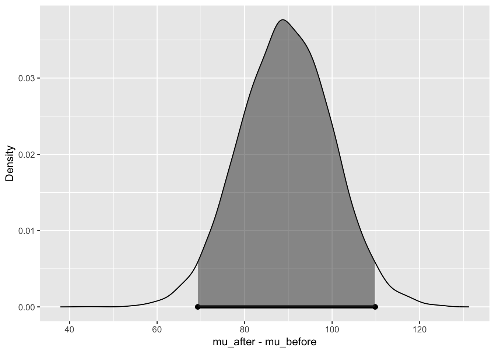
We have a very strong evidence for Hypothesis 2 being true given the data but check quickly Bayes factor as well.
What if we had different priors:
bayes_inference(y = revenue, x = time, data = revenue,
statistic = "mean",
type = "ht", alternative = "twosided", null = 0, hypothesis_prior = c(H1=0.9, H2=0.1),
prior = "JZS", rscale = 1,
method = "theoretical",
show_plot = TRUE) ## Response variable: numerical, Explanatory variable: categorical (2 levels)
## n_after = 30, y_bar_after = 293.3531, s_after = 47.257
## n_before = 30, y_bar_before = 201.7967, s_before = 29.3205
## (Assuming Zellner-Siow Cauchy prior on the difference of means. )
## (Assuming independent Jeffreys prior on the overall mean and variance. )
## Hypotheses:
## H1: mu_after = mu_before
## H2: mu_after != mu_before
##
## Priors: P(H1) = 0.9 P(H2) = 0.1
##
## Results:
## BF[H2:H1] = 5595513029
## P(H1|data) = 0
## P(H2|data) = 1
##
## Posterior summaries for under H2:
## Response variable: numerical, Explanatory variable: categorical (2 levels)
## n_after = 30, y_bar_after = 293.3531, s_after = 47.257
## n_before = 30, y_bar_before = 201.7967, s_before = 29.3205
## (Assuming Zellner-Siow Cauchy prior for difference in means)
## (Assuming independent Jeffrey's priors for overall mean and variance)
##
##
## Posterior Summaries
## 2.5% 25% 50% 75%
## overall mean 237.5660587 244.084966 247.554386 251.157404
## mu_after - mu_before 69.4249348 82.424880 89.613029 96.478308
## sigma^2 1119.4360349 1395.303458 1579.328682 1795.357631
## effect size 1.6065140 2.026853 2.252328 2.485366
## n_0 0.4505696 5.599073 13.596544 27.986252
## 97.5%
## overall mean 257.806226
## mu_after - mu_before 109.970704
## sigma^2 2338.957431
## effect size 2.917952
## n_0 81.311643
## 95% Cred. Int.: (69.4249 , 109.9707)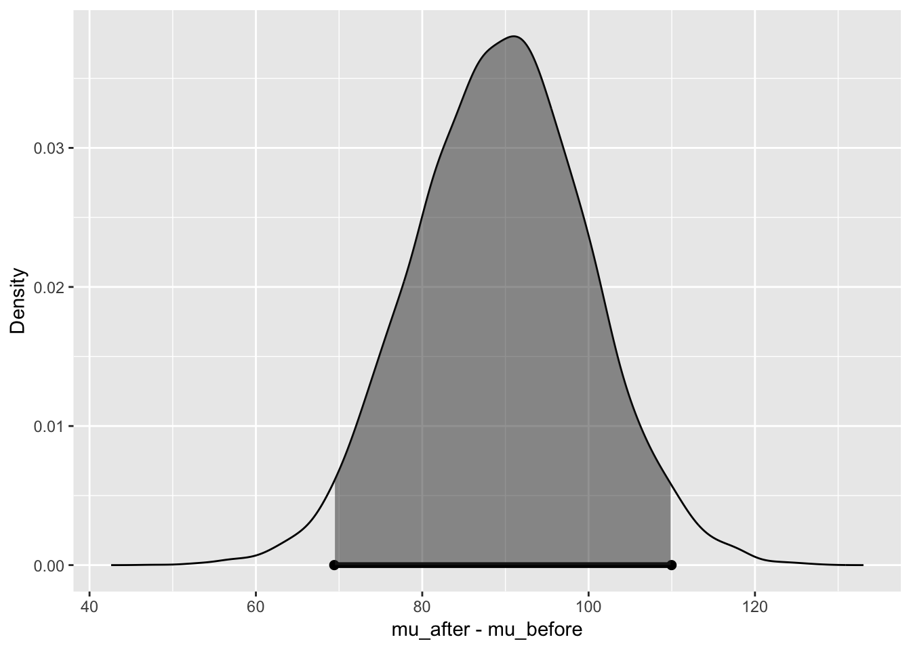
bayes_inference(y = revenue, x = time, data = revenue,
statistic = "mean",
type = "ci", alternative = "twosided", null = 0,
prior = "JZS", rscale = 1,
method = "simulation", show_plot = TRUE)## Response variable: numerical, Explanatory variable: categorical (2 levels)
## n_after = 30, y_bar_after = 293.3531, s_after = 47.257
## n_before = 30, y_bar_before = 201.7967, s_before = 29.3205
## (Assuming Zellner-Siow Cauchy prior for difference in means)
## (Assuming independent Jeffrey's priors for overall mean and variance)
##
##
## Posterior Summaries
## 2.5% 25% 50% 75%
## overall mean 237.2011675 244.165056 247.515701 251.008790
## mu_after - mu_before 68.6313860 82.315259 89.441286 96.336399
## sigma^2 1117.2271225 1396.532818 1586.165242 1793.071786
## effect size 1.5881816 2.021066 2.249806 2.479735
## n_0 0.4853595 5.542992 13.738701 28.521343
## 97.5%
## overall mean 257.555526
## mu_after - mu_before 109.486919
## sigma^2 2316.905207
## effect size 2.914246
## n_0 80.510332
## 95% Cred. Int.: (68.6314 , 109.4869)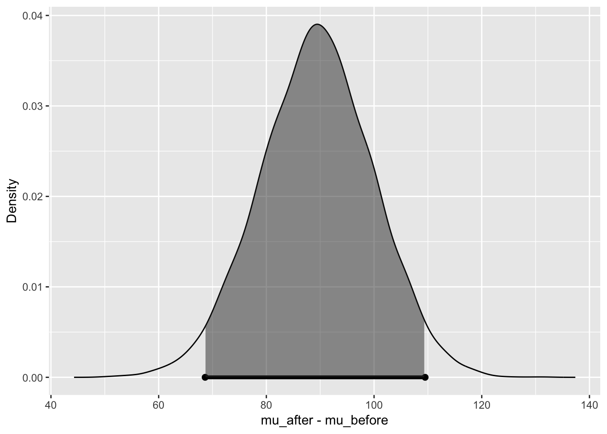
What if we had smaller sample, I ll pick sample of 25:
revenue_sample1<-revenue[sample(nrow(revenue), 25), ]Pretty much same setting below:
bayes_inference(y = revenue, x = time, data = revenue_sample1,
statistic = "mean",
type = "ht", alternative = "twosided", null = 0,
prior = "JZS", rscale = 1,
method = "theoretical", show_plot = FALSE)## Response variable: numerical, Explanatory variable: categorical (2 levels)
## n_after = 14, y_bar_after = 285.0834, s_after = 57.9366
## n_before = 11, y_bar_before = 209.6601, s_before = 14.6336
## (Assuming Zellner-Siow Cauchy prior on the difference of means. )
## (Assuming independent Jeffreys prior on the overall mean and variance. )
## Hypotheses:
## H1: mu_after = mu_before
## H2: mu_after != mu_before
##
## Priors: P(H1) = 0.5 P(H2) = 0.5
##
## Results:
## BF[H2:H1] = 83.9787
## P(H1|data) = 0.0118
## P(H2|data) = 0.9882On a smaller sample, certainty is a bit lower but still very strong!The reason being that we indeed have quite different distributions we are dealing with here.
Lets do one more:
revenue_sample2<-revenue[sample(nrow(revenue), 8), ]bayes_inference(y = revenue, x = time, data = revenue_sample2,
statistic = "mean", #you can change it depending on which distribution you are working with
type = "ht", #allows us to perform hypothesis testing
alternative = "twosided", null = 0,
prior = "JZS", rscale = 1,
method = "theoretical", show_plot = FALSE) #vary the plot argument, by default it will always show you some info about CIs## Response variable: numerical, Explanatory variable: categorical (2 levels)
## n_after = 5, y_bar_after = 273.3182, s_after = 62.2517
## n_before = 3, y_bar_before = 175.6248, s_before = 21.237
## (Assuming Zellner-Siow Cauchy prior on the difference of means. )
## (Assuming independent Jeffreys prior on the overall mean and variance. )
## Hypotheses:
## H1: mu_after = mu_before
## H2: mu_after != mu_before
##
## Priors: P(H1) = 0.5 P(H2) = 0.5
##
## Results:
## BF[H2:H1] = 2.1961
## P(H1|data) = 0.3129
## P(H2|data) = 0.6871Note that we are slightly uncertain now and we have a right to do so given that we may have not collected enough evidence to be hundred percent sure. Although with a simple t test, you will get quite a confident answer.
Lets check with a sample test.
t.test(revenue~time, data=revenue_sample2)##
## Welch Two Sample t-test
##
## data: revenue by time
## t = 3.2115, df = 5.3032, p-value = 0.0218
## alternative hypothesis: true difference in means is not equal to 0
## 95 percent confidence interval:
## 20.82134 174.56537
## sample estimates:
## mean in group after mean in group before
## 273.3182 175.6248Yet if you look at actual t-test you have evidence to reject you null at alpha=0.01. Tricky here but hopefully you can see how Bayesian may offer you a bit of a pragmatic vision on a smaller sample.
26.4 Bayes Factor Example
The other criteria which may motivate the test beyond the sample size its the variance in your groups. Check out the example below on a different dataset. We will use the data on newborns weights from the package. You can use the dataset to practice other methods in Bayesian setting (i.e.lm() or BayesFactor() ). The example was adapted from Clyde et al (2019) Introduction to Baeysian Thinking
#Read data in (available via package)
weight<-ncBrief description of the data:
| variable | description |
|---|---|
fage |
father’s age in years. |
mage |
mother’s age in years. |
mature |
maturity status of mother. |
weeks |
length of pregnancy in weeks. |
premie |
whether the birth was classified as premature (premie) or full-term. |
visits |
number of hospital visits during pregnancy. |
marital |
whether mother is married or not married at birth. |
gained |
weight gained by mother during pregnancy in pounds. |
weight |
weight of the baby at birth in pounds. |
lowbirthweight |
whether baby was classified as low birthweight (low) or not (not low). |
gender |
gender of the baby, female or male. |
habit |
status of the mother as a nonsmoker or a smoker. |
whitemom |
whether mom is white or not white. |
We will focus on testing whether smoking has any impact on new-born weight. We will need first to specify that we are looking at the full-term mothers only. Note that we have unbalanced sample in terms of variable habit.
weight_fullterm <- subset(weight, premie == 'full term')
summary(weight_fullterm)## fage mage mature weeks
## Min. :14.00 Min. :13 mature mom :109 Min. :37.00
## 1st Qu.:25.00 1st Qu.:22 younger mom:737 1st Qu.:38.00
## Median :30.00 Median :27 Median :39.00
## Mean :30.24 Mean :27 Mean :39.25
## 3rd Qu.:35.00 3rd Qu.:32 3rd Qu.:40.00
## Max. :50.00 Max. :50 Max. :45.00
## NA's :132
## premie visits marital gained
## full term:846 Min. : 0.00 married :312 Min. : 0.00
## premie : 0 1st Qu.:10.00 not married:534 1st Qu.:22.00
## Median :12.00 Median :30.00
## Mean :12.35 Mean :31.13
## 3rd Qu.:15.00 3rd Qu.:40.00
## Max. :30.00 Max. :85.00
## NA's :6 NA's :19
## weight lowbirthweight gender habit
## Min. : 3.750 low : 30 female:431 nonsmoker:739
## 1st Qu.: 6.750 not low:816 male :415 smoker :107
## Median : 7.440
## Mean : 7.459
## 3rd Qu.: 8.190
## Max. :11.750
##
## whitemom
## not white:228
## white :616
## NA's : 2
##
##
##
## Lets do some quick visualisations:
library(ggplot2)
ggplot(data = weight_fullterm, aes(x = gained)) +
geom_histogram(binwidth = 5)## Warning: Removed 19 rows containing non-finite values (stat_bin).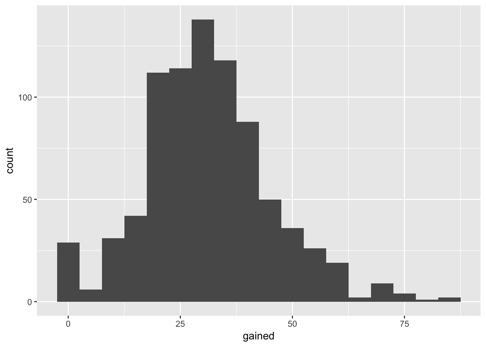
ggplot(weight_fullterm, aes(x = habit, y = weight)) +
geom_boxplot()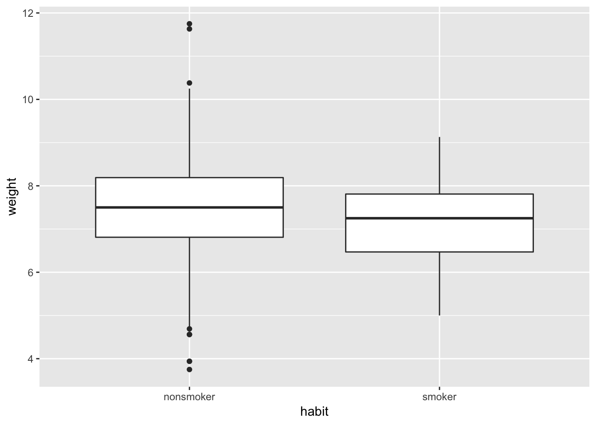
Note that in the example above there are overlaps across the two distributions. We can use familiar test specification to test what would be the chances to observe the difference between the two. Same competing hypotheses as before:
\[ H_1: \mu_{\text{before}} = \mu_{\text{after}}\qquad \Longrightarrow \qquad H_1: \mu_{\text{diff}} = 0, \]
\[ H_2: \mu_{\text{before}} \neq \mu_{\text{after}}\qquad \Longrightarrow \qquad H_1: \mu_{\text{diff}} \neq 0, \]
bayes_inference(y = weight, x = habit, data = weight_fullterm,
statistic = "mean",
type = "ht", alternative = "twosided", null = 0,
hypothesis_prior = c(H1 = 0.8, H2 = 0.2), # note that we can change hypothesis priors (try to vary)
prior = "JZS", rscale = 1,
method = "theoretical", show_plot = FALSE)## Response variable: numerical, Explanatory variable: categorical (2 levels)
## n_nonsmoker = 739, y_bar_nonsmoker = 7.5011, s_nonsmoker = 1.0833
## n_smoker = 107, y_bar_smoker = 7.1713, s_smoker = 0.9724
## (Assuming Zellner-Siow Cauchy prior on the difference of means. )
## (Assuming independent Jeffreys prior on the overall mean and variance. )
## Hypotheses:
## H1: mu_nonsmoker = mu_smoker
## H2: mu_nonsmoker != mu_smoker
##
## Priors: P(H1) = 0.8 P(H2) = 0.2
##
## Results:
## BF[H2:H1] = 6.237
## P(H1|data) = 0.3907
## P(H2|data) = 0.6093Lets compare to the results under uniform priors (make a note of the differences in probability)
bayes_inference(y = weight, x = habit, data = weight_fullterm,
statistic = "mean",
type = "ht", alternative = "twosided", null = 0,
hypothesis_prior = c(H1 = 0.5, H2 = 0.5), # note that we can change hypothesis priors (try vary)
prior = "JZS", rscale = 1,
method = "theoretical", show_plot = FALSE)## Response variable: numerical, Explanatory variable: categorical (2 levels)
## n_nonsmoker = 739, y_bar_nonsmoker = 7.5011, s_nonsmoker = 1.0833
## n_smoker = 107, y_bar_smoker = 7.1713, s_smoker = 0.9724
## (Assuming Zellner-Siow Cauchy prior on the difference of means. )
## (Assuming independent Jeffreys prior on the overall mean and variance. )
## Hypotheses:
## H1: mu_nonsmoker = mu_smoker
## H2: mu_nonsmoker != mu_smoker
##
## Priors: P(H1) = 0.5 P(H2) = 0.5
##
## Results:
## BF[H2:H1] = 6.237
## P(H1|data) = 0.1382
## P(H2|data) = 0.8618What if we used t-test?
t.test(weight~habit, weight_fullterm)##
## Welch Two Sample t-test
##
## data: weight by habit
## t = 3.2303, df = 146.84, p-value = 0.001526
## alternative hypothesis: true difference in means is not equal to 0
## 95 percent confidence interval:
## 0.1280399 0.5315896
## sample estimates:
## mean in group nonsmoker mean in group smoker
## 7.501123 7.171308Quite strong evidence for rejecting the null. I personally would go here with Bayesian reasoning, having a bit of uncertainty about both is important.
26.5 Bayes Factor and Anova
We can try to use other types of data. Lets try with the dose that we had before:
#Load the data
experiment<-read.csv('dose.csv')
#Recode as factor
experiment$dose <- factor(experiment$dose, levels=c(1,2,3), labels = c("Placebo", "Low_dose", "High_dose"))For two or more groups we can use Bayesfactor to test two competing hypotheses: - There are no differences between means in each group, all means are equal - At least one of the means is different
We can test this first with a traditional anova:
anova<-aov(effect~dose, data=experiment)
summary(anova)## Df Sum Sq Mean Sq F value Pr(>F)
## dose 2 20.13 10.067 5.119 0.0247 *
## Residuals 12 23.60 1.967
## ---
## Signif. codes: 0 '***' 0.001 '**' 0.01 '*' 0.05 '.' 0.1 ' ' 1We can use BayesFactor now to compare:
library(BayesFactor)There is a very short specification in this example. However, if you are using repeated measures design you can also specify it using whichRandom.
#Set up a simple anova
anovaB<-anovaBF(effect~dose, data=experiment, whichRandom = NULL, # you can adjust this if having random factors
iterations = 10000)#Summarise
summary(anovaB)## Bayes factor analysis
## --------------
## [1] dose : 3.070605 ±0.01%
##
## Against denominator:
## Intercept only
## ---
## Bayes factor type: BFlinearModel, JZSWe can anylyse Bayes factor here instead. Such will allow us to decide whether we are in favour of the null or the alternative given the posterior probability distribution. Remember that Bayes factor is the odds of favouring the alternative (ratio of the likelihood for the alternative, over the null)
Recall, the interpretation of BF:
| BF[H_1:H_2] | Evidence against H_2 |
|---|---|
| 1 to 3 | Not worth a bare mention |
| 3 to 20 | Positive |
| 20 to 150 Strong | Strong |
26.5.1 Exercise
Why not to try one yourself? Go back to data on new borns weights - explore other relationships in your data using Bayes.
26.6 Linear models with BAS
Let us now finally get to linear models. You will find that generally there are lots of similarities when it comes to finding your estimates and fitting line of best fit. However, the crucial difference comes from approach to uncertainty about the error term and most importantly, the model selection process. The example below was also adapted from Clyde et al (2019) Introduction to Baeysian Thinking
26.6.1 BIC and R squared
You know by now that there are few ways we can measure the goodness of fit in linear models. In Bayesian setting BIC will be quite preferred but on that later. Lets get on with the example. We’ll first need to get a new package BAS.
#Load BAS
library(BAS)And lets get a new data set. We will use the one on wages (Wooldrige, 2018) and I am going to create a model which has multiple predictors:
| variable | description |
|---|---|
wage |
weekly earnings (dollars) |
hours |
average hours worked per week |
iq |
IQ score |
kww |
knowledge of world work score |
educ |
number of years of education |
exper |
years of work experience |
tenure |
years with current employer |
age |
age in years |
married |
=1 if married |
black |
=1 if black |
south |
=1 if live in south |
urban |
=1 if live in a Standard Metropolitan Statistical Area |
sibs |
number of siblings |
brthord |
birth order |
meduc |
mother’s education (years) |
feduc |
father’s education (years) |
lwage |
natural log of wage |
The data set comes together with statsr package. The illustration below is adapted from the amazing coursera course on Bayesian Statistics which is associated with the book cited above. See further resources for more.
#Set the seed (this can be anything really)
set.seed(230290)
#Load the data
data(wage)We can explore data a bit, make some plots, check the structure, etc.:
#Plot Y
ggplot(data = wage, aes(x = wage)) +
geom_histogram(binwidth = 70)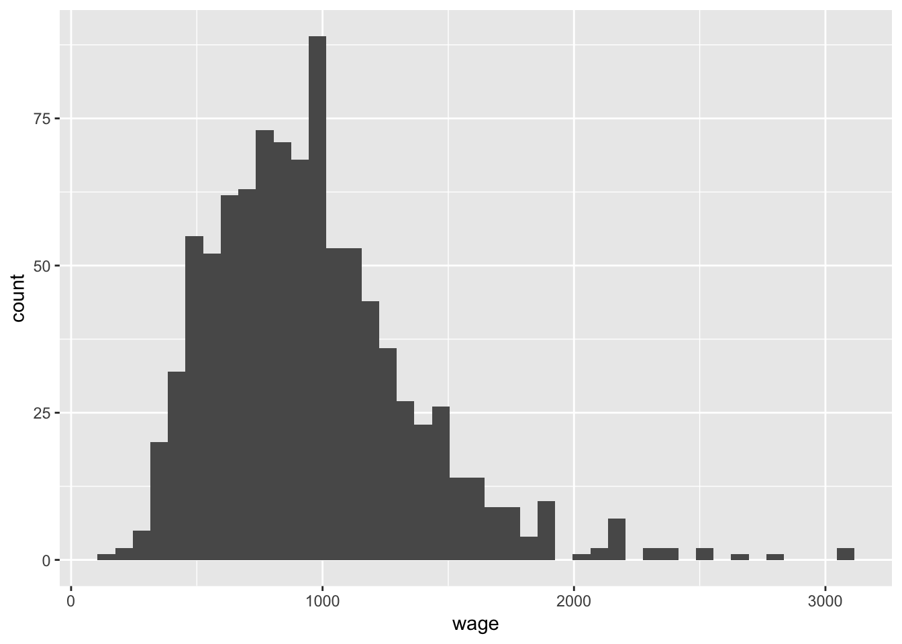
I also want to check how does wage vary with respect to some common predictors (i.e. hours, IQ, education)
#Plot Y against a predictor (hours)
ggplot(data = wage, aes(y = wage,x=hours)) +
geom_point()
#Plot Y against a predictor (iq)
ggplot(data = wage, aes(y = wage,x=iq)) +
geom_point()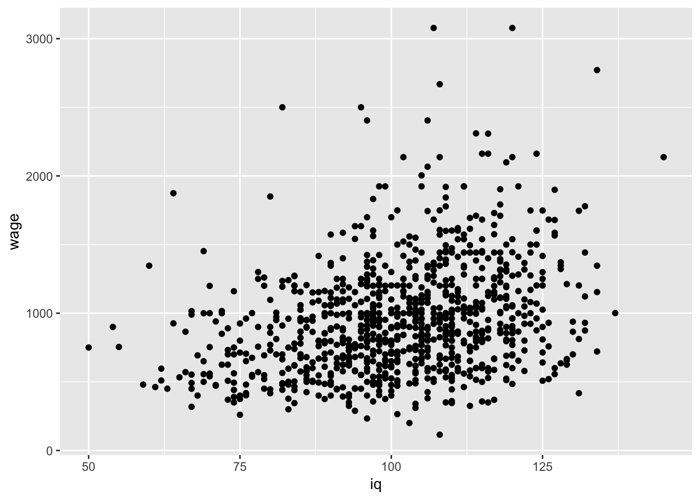
#Plot Y against a predictor (educ)
ggplot(data = wage, aes(y = wage,x=educ)) +
geom_point()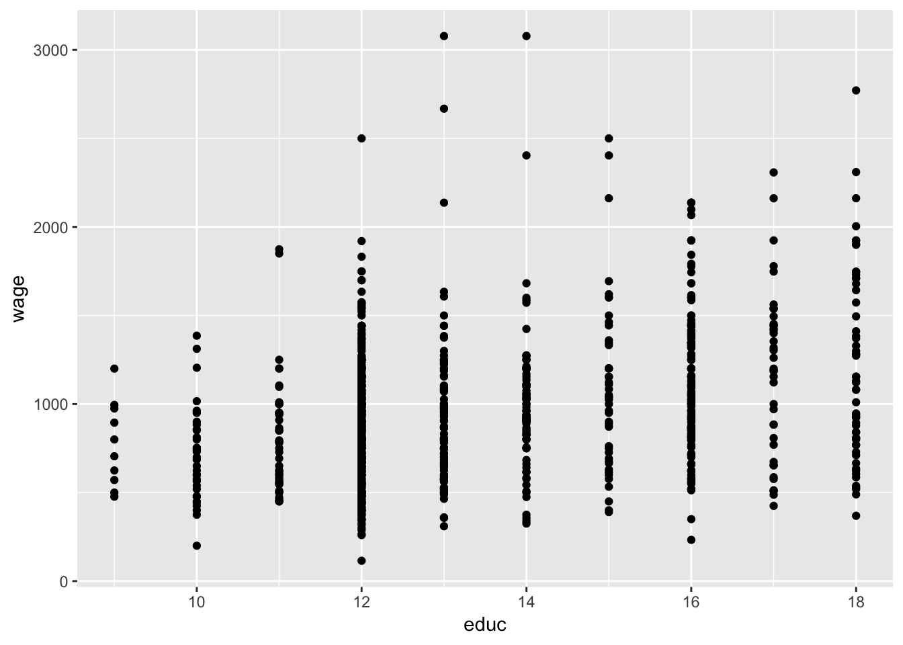
Lets focus on iq just for the time being as it seems to vary most and may have some important information with respect to the variability in wages:
#I will add a lm fit here as well (using stat_smooth)
ggplot(data = wage, aes(y = wage,x=iq)) +
geom_point() + stat_smooth(method = "lm", se = FALSE) #note that you can vary se =T/F if keen to see the uncertainty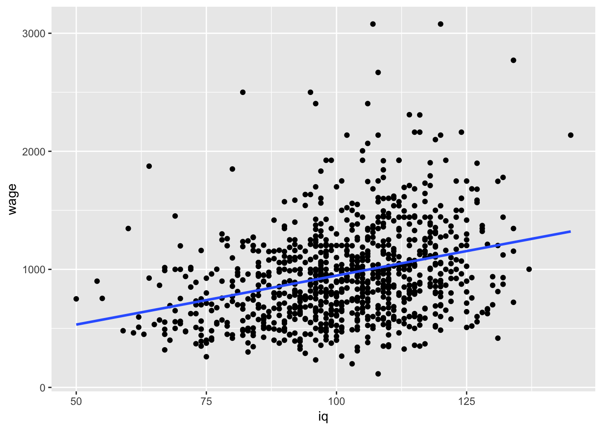
#Run a simple lm
model_wage<-lm(lwage~.-wage, data=wage) # note how I use ~. to include all covariates for now, we use -wage to not include raw variable of wage
summary(model_wage)##
## Call:
## lm(formula = lwage ~ . - wage, data = wage)
##
## Residuals:
## Min 1Q Median 3Q Max
## -1.96887 -0.19460 0.00923 0.22401 1.34185
##
## Coefficients:
## Estimate Std. Error t value Pr(>|t|)
## (Intercept) 5.156439 0.225286 22.888 < 2e-16 ***
## hours -0.006548 0.001934 -3.385 0.000754 ***
## iq 0.003186 0.001223 2.604 0.009425 **
## kww 0.003735 0.002390 1.562 0.118662
## educ 0.041267 0.008942 4.615 4.74e-06 ***
## exper 0.010749 0.004435 2.424 0.015629 *
## tenure 0.007102 0.002894 2.454 0.014401 *
## age 0.009107 0.005977 1.524 0.128058
## married1 0.200760 0.045998 4.365 1.48e-05 ***
## black1 -0.105141 0.055667 -1.889 0.059373 .
## south1 -0.049076 0.030753 -1.596 0.111019
## urban1 0.195658 0.031240 6.263 6.88e-10 ***
## sibs 0.009619 0.007876 1.221 0.222423
## brthord -0.018465 0.011569 -1.596 0.110975
## meduc 0.009633 0.006167 1.562 0.118753
## feduc 0.005590 0.005398 1.036 0.300805
## ---
## Signif. codes: 0 '***' 0.001 '**' 0.01 '*' 0.05 '.' 0.1 ' ' 1
##
## Residual standard error: 0.3507 on 647 degrees of freedom
## (272 observations deleted due to missingness)
## Multiple R-squared: 0.2925, Adjusted R-squared: 0.2761
## F-statistic: 17.84 on 15 and 647 DF, p-value: < 2.2e-16Not bad, right? Most of the variables do seem important. Could be few highly correlated as well (iq, educ). I would not be 100% sure that we picked the best ones here. With BAS we can do something a bit more pragmatic, known as incremental Bayesian model selection, check this out below:
#Run a bayes lm
# First: clean
#Exclude observations with missing values in the data set
wage_clean <- na.omit(wage)
# Fit the model using Bayesian linear regression, `bas.lm`
wage_bayes <- bas.lm(lwage ~ . -wage, data = wage_clean,
prior = "BIC",
modelprior = uniform()) #uniform prior specifies that we do not outweight any prior
# Print out the marginal posterior inclusion probabilities for each variable
wage_bayes##
## Call:
## bas.lm(formula = lwage ~ . - wage, data = wage_clean, prior = "BIC",
## modelprior = uniform())
##
##
## Marginal Posterior Inclusion Probabilities:
## Intercept hours iq kww educ exper
## 1.00000 0.85540 0.89732 0.34790 0.99887 0.70999
## tenure age married1 black1 south1 urban1
## 0.70389 0.52468 0.99894 0.34636 0.32029 1.00000
## sibs brthord meduc feduc
## 0.04152 0.12241 0.57339 0.23274# Now we can check the best 5 most probable models:
summary(wage_bayes)## P(B != 0 | Y) model 1 model 2 model 3
## Intercept 1.00000000 1.0000 1.0000000 1.0000000
## hours 0.85540453 1.0000 1.0000000 1.0000000
## iq 0.89732383 1.0000 1.0000000 1.0000000
## kww 0.34789688 0.0000 0.0000000 0.0000000
## educ 0.99887165 1.0000 1.0000000 1.0000000
## exper 0.70999255 0.0000 1.0000000 1.0000000
## tenure 0.70388781 1.0000 1.0000000 1.0000000
## age 0.52467710 1.0000 1.0000000 0.0000000
## married1 0.99894488 1.0000 1.0000000 1.0000000
## black1 0.34636467 0.0000 0.0000000 0.0000000
## south1 0.32028825 0.0000 0.0000000 0.0000000
## urban1 0.99999983 1.0000 1.0000000 1.0000000
## sibs 0.04152242 0.0000 0.0000000 0.0000000
## brthord 0.12241286 0.0000 0.0000000 0.0000000
## meduc 0.57339302 1.0000 1.0000000 1.0000000
## feduc 0.23274084 0.0000 0.0000000 0.0000000
## BF NA 1.0000 0.5219483 0.5182769
## PostProbs NA 0.0455 0.0237000 0.0236000
## R2 NA 0.2710 0.2767000 0.2696000
## dim NA 9.0000 10.0000000 9.0000000
## logmarg NA -1490.0530 -1490.7032349 -1490.7102938
## model 4 model 5
## Intercept 1.0000000 1.0000000
## hours 1.0000000 1.0000000
## iq 1.0000000 1.0000000
## kww 1.0000000 0.0000000
## educ 1.0000000 1.0000000
## exper 1.0000000 0.0000000
## tenure 1.0000000 1.0000000
## age 0.0000000 1.0000000
## married1 1.0000000 1.0000000
## black1 0.0000000 1.0000000
## south1 0.0000000 0.0000000
## urban1 1.0000000 1.0000000
## sibs 0.0000000 0.0000000
## brthord 0.0000000 0.0000000
## meduc 1.0000000 1.0000000
## feduc 0.0000000 0.0000000
## BF 0.4414346 0.4126565
## PostProbs 0.0201000 0.0188000
## R2 0.2763000 0.2762000
## dim 10.0000000 10.0000000
## logmarg -1490.8707736 -1490.9381880Quite a lot of info! Lets study it very carefully!
We can also do some quick plots:
plot(wage_bayes, ask = F)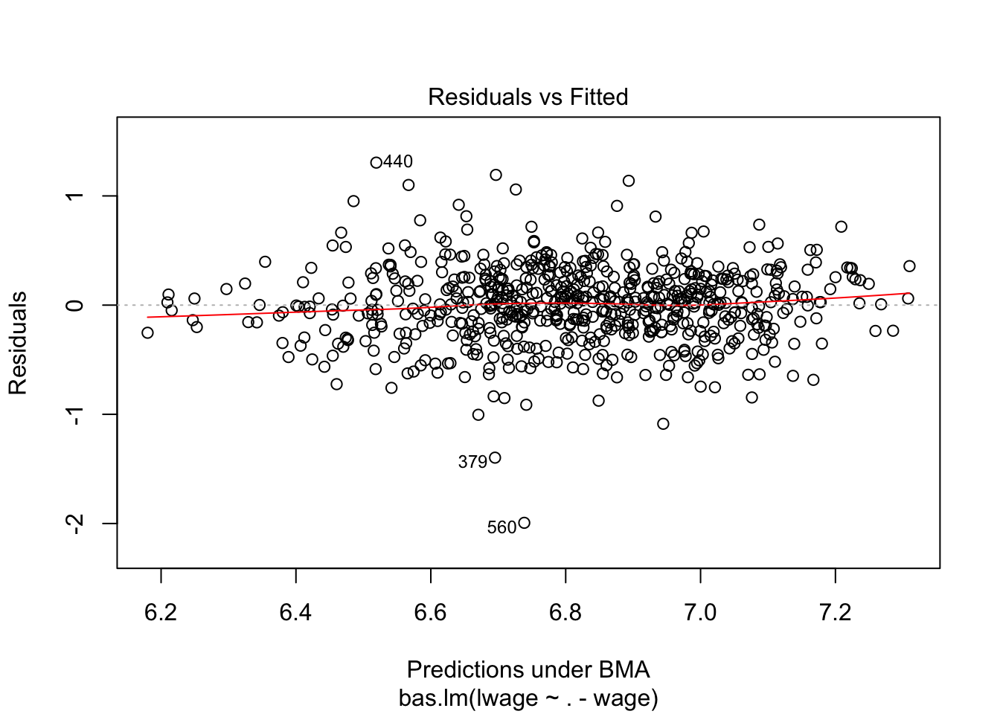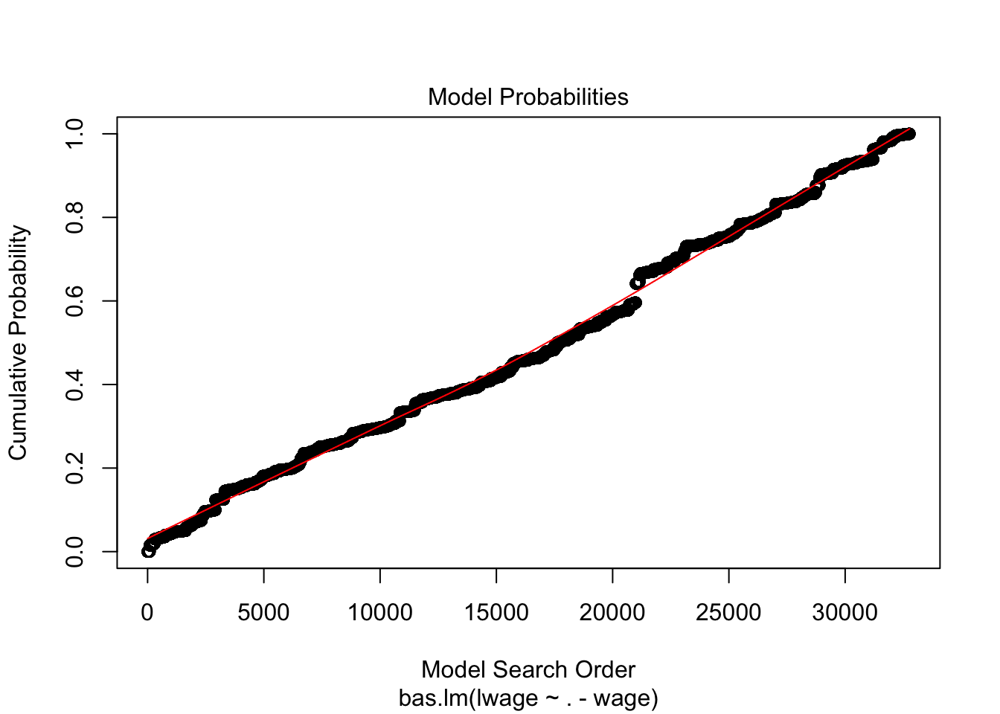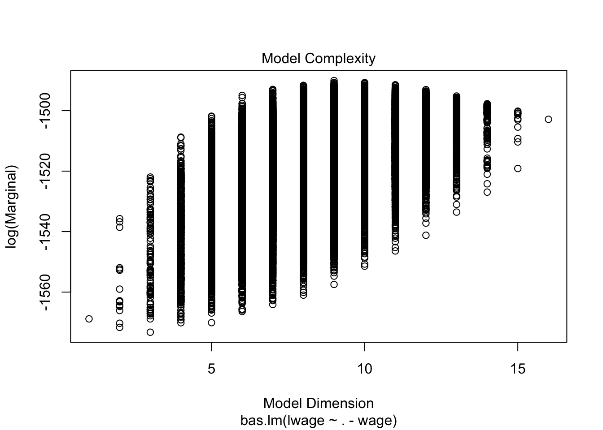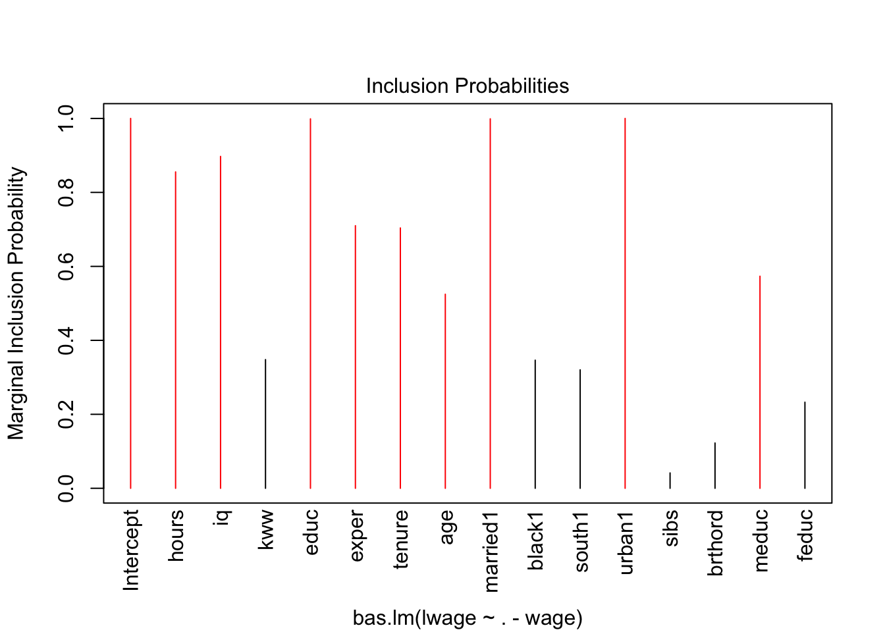
Note that 0 and 1 suggest you whether predictor should be kept in or not in the model. You can also note R squared values in the main output. Interestingly, Bayes suggest that we may drop, among many, the variables such as kww, sibs, brthord.
One of the other handy ways to see what would be the choices via BAS is using image(). We can check the rank of the models together with an illustration of which variables may be important to keep. You will find that hours, iq and urban are the only three which show to be valuable to keep in every single model, regardless of the rank.
#Use image()
image(wage_bayes)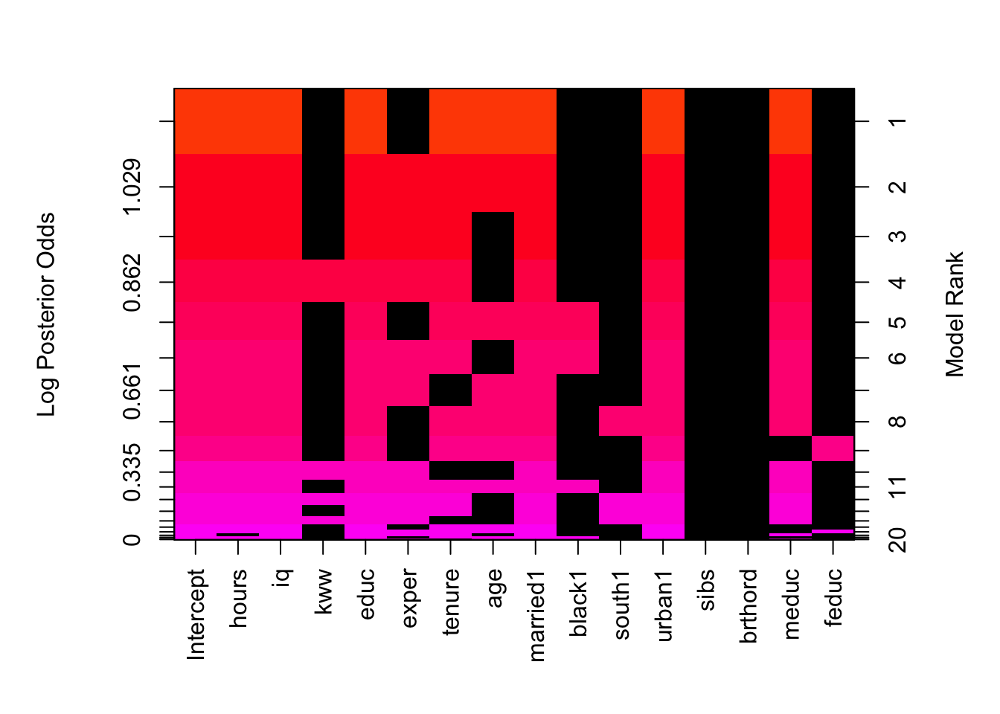
When it comes to presenting the results, all of the above can be really handy. You can also perhaps show the overview of models comparison instead of choosing one final one like we did in the previous sections. This is useful in scenarios when you want to evaluate a relative important of certain variable as some theoretically should still be there.
Remember also, that we have quite Naive prior here - we do not really put any weight on anything before we start - this can be helpful at times but also may not be optimal if theoretically you do believe the other relationship must exist (i.e. can be presented via prior). One addition to the final output would be a table of uncertainty associated with each of the estimates:
#Extract the coefficients
coef_wage <- coefficients(wage_bayes)
# we can focus on IQ to provide some quick visualiation (note: `iq` is the 3rd variable)
plot(coef_wage, subset = 3, ask = FALSE)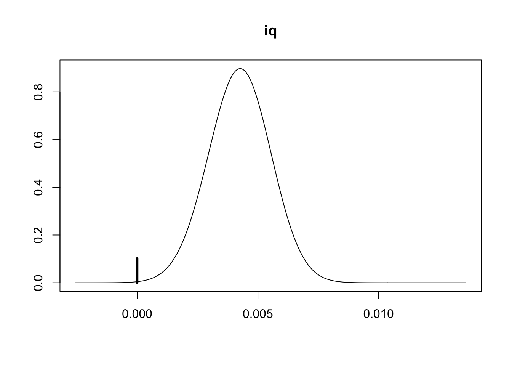 What can we say?
#Extract the coefficients
coef_wage <- coefficients(wage_bayes)
# we can focus on hours isntead to provide some quick visualiation (note: `hours` is the 2nd variable)
plot(coef_wage, subset = 2, ask = FALSE)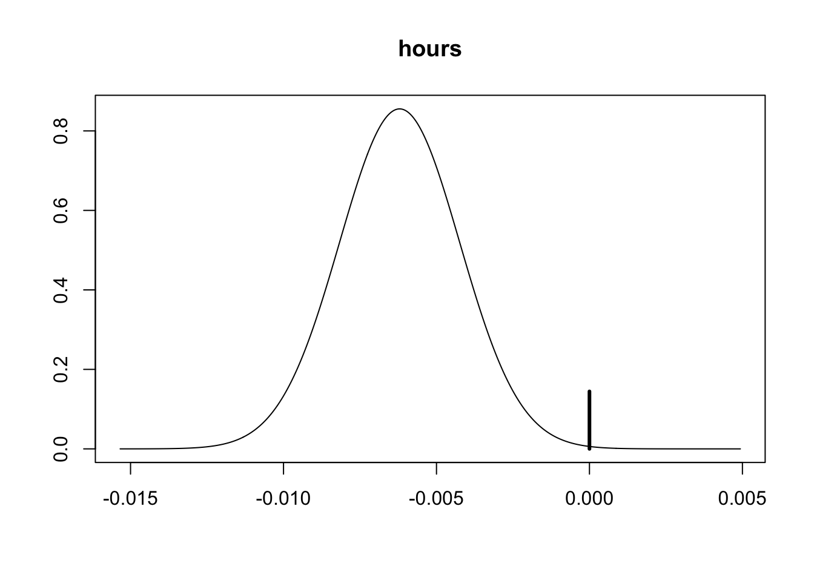
We can also just glimpse at the credible intervals for the others just to gauge where our effects are:
#Get the CIs
confint(coef_wage)## 2.5% 97.5% beta
## Intercept 6.787125969 6.840330132 6.8142970694
## hours -0.009264429 0.000000000 -0.0053079979
## iq 0.000000000 0.006269294 0.0037983313
## kww 0.000000000 0.008426781 0.0019605787
## educ 0.023178579 0.066087921 0.0440707549
## exper 0.000000000 0.021075593 0.0100264057
## tenure 0.000000000 0.012848868 0.0059357058
## age 0.000000000 0.025541837 0.0089659753
## married1 0.117613573 0.298830834 0.2092940731
## black1 -0.190768975 0.000000000 -0.0441863361
## south1 -0.101937569 0.000000000 -0.0221757978
## urban1 0.137746068 0.261286962 0.1981221313
## sibs 0.000000000 0.000000000 0.0000218455
## brthord -0.019058583 0.000000000 -0.0019470674
## meduc 0.000000000 0.022850629 0.0086717156
## feduc 0.000000000 0.015457295 0.0025125930
## attr(,"Probability")
## [1] 0.95
## attr(,"class")
## [1] "confint.bas"Those can be plotted too:
#Use plot for confint of coefficients
plot(confint(coef(wage_bayes), parm = 2:16)) #parm stands for parameters 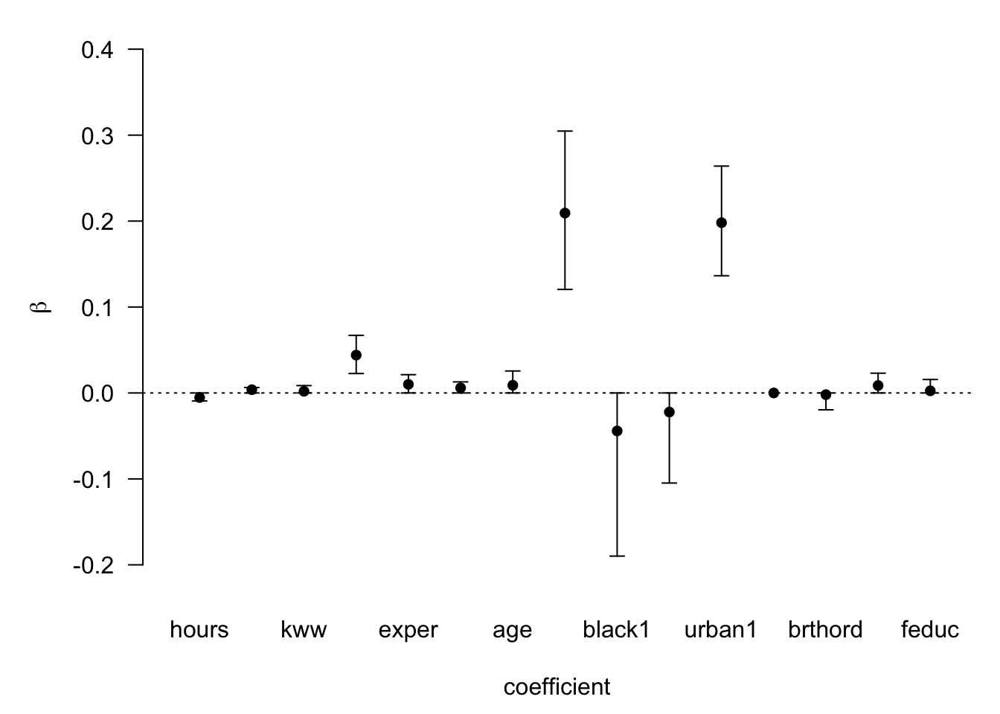
## NULLMake a note of the Bayes factor we found in the main summary and how it changes as we move down the ranking of the models. You can also evaluate carefully the probability of observing Beta!=0 as well whilst we are here.
Lets try now given the analysis suggestion remove the covariates which seem not to add much to our estimation.
#Create reduced dataset
wage_reduced <- within(wage, rm('wage', 'sibs', 'brthord', 'meduc', 'feduc', 'kww'))
str(wage_reduced)## Classes 'tbl_df', 'tbl' and 'data.frame': 935 obs. of 11 variables:
## $ hours : int 40 50 40 40 40 40 40 40 45 40 ...
## $ iq : int 93 119 108 96 74 116 91 114 111 95 ...
## $ educ : int 12 18 14 12 11 16 10 18 15 12 ...
## $ exper : int 11 11 11 13 14 14 13 8 13 16 ...
## $ tenure : int 2 16 9 7 5 2 0 14 1 16 ...
## $ age : int 31 37 33 32 34 35 30 38 36 36 ...
## $ married: Factor w/ 2 levels "0","1": 2 2 2 2 2 2 1 2 2 2 ...
## $ black : Factor w/ 2 levels "0","1": 1 1 1 1 1 2 1 1 1 1 ...
## $ south : Factor w/ 2 levels "0","1": 1 1 1 1 1 1 1 1 1 1 ...
## $ urban : Factor w/ 2 levels "0","1": 2 2 2 2 2 2 2 2 1 2 ...
## $ lwage : num 6.65 6.69 6.72 6.48 6.33 ...#Lets run a new model
wage_bayes_reduced <- bas.lm(lwage ~ ., data = wage_reduced,
prior = "ZS-null",
modelprior = uniform())
summary(wage_bayes_reduced)## P(B != 0 | Y) model 1 model 2 model 3 model 4
## Intercept 1.0000000 1.0000 1.0000000 1.0000000 1.000000
## hours 0.9365342 1.0000 1.0000000 1.0000000 1.000000
## iq 0.9859702 1.0000 1.0000000 1.0000000 1.000000
## educ 1.0000000 1.0000 1.0000000 1.0000000 1.000000
## exper 0.9333596 1.0000 1.0000000 0.0000000 1.000000
## tenure 0.9989689 1.0000 1.0000000 1.0000000 1.000000
## age 0.3842205 0.0000 1.0000000 1.0000000 0.000000
## married1 0.9999821 1.0000 1.0000000 1.0000000 1.000000
## black1 0.9933565 1.0000 1.0000000 1.0000000 1.000000
## south1 0.9005810 1.0000 1.0000000 1.0000000 0.000000
## urban1 1.0000000 1.0000 1.0000000 1.0000000 1.000000
## BF NA 1.0000 0.5290852 0.1110048 0.109291
## PostProbs NA 0.5028 0.2660000 0.0558000 0.054900
## R2 NA 0.2708 0.2737000 0.2674000 0.263400
## dim NA 10.0000 11.0000000 10.0000000 9.000000
## logmarg NA 120.6574 120.0208031 118.4592272 118.443668
## model 5
## Intercept 1.00000000
## hours 0.00000000
## iq 1.00000000
## educ 1.00000000
## exper 1.00000000
## tenure 1.00000000
## age 0.00000000
## married1 1.00000000
## black1 1.00000000
## south1 1.00000000
## urban1 1.00000000
## BF 0.07606137
## PostProbs 0.03820000
## R2 0.26280000
## dim 9.00000000
## logmarg 118.08119408Explore the reduced model further by yourself.
26.7 Predictions from bas.lm
When it comes to predictions we can specify which model we want to use given the results we observed earlier. There are three main choices you have:
Best Predictive Model (BPM)
Highest Probability Model (HPM)
Median Probability Model (MPM)
Lets try each of these, given that depending how we aces the best model , you can also check variable.names of predicted object to see which variables would be kept:
#Store the predictions using BPM
BPM_pred_wage <- predict(wage_bayes, estimator = "BPM", se.fit = TRUE)
variable.names(BPM_pred_wage) #Check what was kept## [1] "Intercept" "hours" "iq" "kww" "educ"
## [6] "exper" "tenure" "age" "married1" "urban1"
## [11] "meduc"#Store the predictions using HPM
HPM_pred_wage <- predict(wage_bayes, estimator = "HPM")
variable.names(HPM_pred_wage)## [1] "Intercept" "hours" "iq" "educ" "tenure" "age"
## [7] "married1" "urban1" "meduc"#Store the predictions using MPM
MPM_pred_wage <- predict(wage_bayes, estimator = "MPM")
variable.names(MPM_pred_wage)## [1] "Intercept" "hours" "iq" "educ" "exper"
## [6] "tenure" "age" "married1" "urban1" "meduc"Note how the set of variables changes.
We can do few other things whilst still here. We can evaluate the CIs of individual prediction.
# Find the index of observation with the largest fitted value
opt <- which.max(BPM_pred_wage$fit)
# Extract the row with this observation and check whats in
wage_clean [opt,]## # A tibble: 1 x 17
## wage hours iq kww educ exper tenure age married black south
## <int> <int> <int> <int> <int> <int> <int> <int> <fct> <fct> <fct>
## 1 1586 40 127 48 16 16 12 37 1 0 0
## # … with 6 more variables: urban <fct>, sibs <int>, brthord <int>,
## # meduc <int>, feduc <int>, lwage <dbl>ci_wage <- confint(BPM_pred_wage, parm = "pred")
ci_wage[opt,]## 2.5% 97.5% pred
## 6.661863 8.056457 7.359160These are in logs since our model was estimated using lwage.
We can taransfer back to real values via exp()
exp(ci_wage[opt,])## 2.5% 97.5% pred
## 782.0062 3154.0967 1570.5169As the choice of the model dictated prediction, we would also find that our CIs will be slightly different:
If we were to use BMA, the interval would be:
BMA_pred_wage <- predict(wage_bayes, estimator = "BMA", se.fit = TRUE)
ci_bma_wage <- confint(BMA_pred_wage, estimator = "BMA")
opt_bma <- which.max(BMA_pred_wage$fit)
exp(ci_bma_wage[opt_bma, ])## 2.5% 97.5% pred
## 748.1206 3086.3529 1494.9899You can go on exploring as much as you want here and hopefully you can see now that with Bayesian approach there is a lot going on.
26.8 Examining and presenting results
It would be useful ideally to present all possible combinations as depending what reader may look for - they may find that seeing visuals is useful to evaluate the relative importance of variables, etc. You can also do some diagnostics for your residuals.
Why? You want to be confident about what you found, some answers may be much more important to be precise than others - this is one of the reason why Bayesian staistics may be useful when interested to provide more humble approach to what has been observed given the prior beliefs, your data and likelihood of the data given your model set up. You can provide your reader with your comparisons. These will form a useful evidence for the future research.
26.9 Bayesian Mixed methods example (Optional)
We will illustrate two examples here that you have already seen in Chapter 3. We will compare results we obtain from Bayesian alternative to lmer (bmer) and to glmer (brm). We may not have time to cover all, but please do have a look at your own time. We will provde an introduction to the main steps. You will see that estimation itself takes no time at all but you will need to explore your outputs a bit more, given the variety of the specifications you are presented with in Bayesian settings.
26.9.1 Data
#Lets load the data
lung_cancer <- read.csv("lung_cancer.csv")#Check out the structure
str(lung_cancer)## 'data.frame': 8525 obs. of 28 variables:
## $ X : int 1 2 3 4 5 6 7 8 9 10 ...
## $ tumorsize : num 68 64.7 51.6 86.4 53.4 ...
## $ co2 : num 1.53 1.68 1.53 1.45 1.57 ...
## $ pain : int 4 2 6 3 3 4 3 3 4 5 ...
## $ wound : int 4 3 3 3 4 5 4 3 4 4 ...
## $ mobility : int 2 2 2 2 2 2 2 3 3 3 ...
## $ ntumors : int 0 0 0 0 0 0 0 0 2 0 ...
## $ nmorphine : int 0 0 0 0 0 0 0 0 0 0 ...
## $ remission : int 0 0 0 0 0 0 0 0 0 0 ...
## $ lungcapacity: num 0.801 0.326 0.565 0.848 0.886 ...
## $ Age : num 65 53.9 53.3 41.4 46.8 ...
## $ Married : Factor w/ 2 levels "no","yes": 1 1 2 1 1 2 2 1 2 1 ...
## $ FamilyHx : Factor w/ 2 levels "no","yes": 1 1 1 1 1 1 1 1 2 1 ...
## $ SmokingHx : Factor w/ 3 levels "current","former",..: 2 2 3 2 3 3 1 2 2 3 ...
## $ Sex : Factor w/ 2 levels "female","male": 2 1 1 2 2 2 1 2 2 2 ...
## $ CancerStage : Factor w/ 4 levels "I","II","III",..: 2 2 2 1 2 1 2 2 2 2 ...
## $ LengthofStay: int 6 6 5 5 6 5 4 5 6 7 ...
## $ WBC : num 6088 6700 6043 7163 6443 ...
## $ RBC : num 4.87 4.68 5.01 5.27 4.98 ...
## $ BMI : num 24.1 29.4 29.5 21.6 29.8 ...
## $ IL6 : num 3.7 2.63 13.9 3.01 3.89 ...
## $ CRP : num 8.086 0.803 4.034 2.126 1.349 ...
## $ DID : int 1 1 1 1 1 1 1 1 1 1 ...
## $ Experience : int 25 25 25 25 25 25 25 25 25 25 ...
## $ School : Factor w/ 2 levels "average","top": 1 1 1 1 1 1 1 1 1 1 ...
## $ Lawsuits : int 3 3 3 3 3 3 3 3 3 3 ...
## $ HID : int 1 1 1 1 1 1 1 1 1 1 ...
## $ Medicaid : num 0.606 0.606 0.606 0.606 0.606 ...Fit the model using a mixture of variables that theoretically are important here:
library(lme4)
# Estimate the model and store results in model_lc
model_lc <- glmer(remission ~ Age + LengthofStay + FamilyHx + CancerStage + CancerStage + Experience + (1 | DID) + (1 | HID),
data = lung_cancer, family = binomial, optimizer='Nelder_Mead') #note that I have updated the optimizer (to avoid warnings)## Warning in checkConv(attr(opt, "derivs"), opt$par, ctrl =
## control$checkConv, : Model failed to converge with max|grad| = 0.858202
## (tol = 0.001, component 1)# Print the mod results:what do you find?
summary(model_lc)## Generalized linear mixed model fit by maximum likelihood (Laplace
## Approximation) [glmerMod]
## Family: binomial ( logit )
## Formula:
## remission ~ Age + LengthofStay + FamilyHx + CancerStage + CancerStage +
## Experience + (1 | DID) + (1 | HID)
## Data: lung_cancer
##
## AIC BIC logLik deviance df.resid
## 7225.6 7296.1 -3602.8 7205.6 8515
##
## Scaled residuals:
## Min 1Q Median 3Q Max
## -3.9563 -0.4229 -0.1890 0.3629 8.2299
##
## Random effects:
## Groups Name Variance Std.Dev.
## DID (Intercept) 3.8471 1.9614
## HID (Intercept) 0.2419 0.4919
## Number of obs: 8525, groups: DID, 407; HID, 35
##
## Fixed effects:
## Estimate Std. Error z value Pr(>|z|)
## (Intercept) -1.960353 0.568451 -3.449 0.000564 ***
## Age -0.015968 0.005904 -2.705 0.006836 **
## LengthofStay -0.043030 0.035505 -1.212 0.225524
## FamilyHxyes -1.295706 0.093369 -13.877 < 2e-16 ***
## CancerStageII -0.321924 0.076376 -4.215 2.50e-05 ***
## CancerStageIII -0.857475 0.100025 -8.573 < 2e-16 ***
## CancerStageIV -2.137657 0.162281 -13.173 < 2e-16 ***
## Experience 0.125360 0.026881 4.664 3.11e-06 ***
## ---
## Signif. codes: 0 '***' 0.001 '**' 0.01 '*' 0.05 '.' 0.1 ' ' 1
##
## Correlation of Fixed Effects:
## (Intr) Age LngthS FmlyHx CncSII CnSIII CncSIV
## Age -0.390
## LengthofSty -0.141 -0.319
## FamilyHxyes -0.013 0.103 -0.112
## CancerStgII 0.084 -0.181 -0.186 -0.052
## CancrStgIII 0.139 -0.222 -0.239 -0.051 0.513
## CancerStgIV 0.148 -0.220 -0.194 -0.012 0.357 0.347
## Experience -0.835 -0.009 -0.004 -0.022 -0.002 -0.005 -0.012
## convergence code: 0
## Model failed to converge with max|grad| = 0.858202 (tol = 0.001, component 1)Lets also build CIs while we are here - we can compare those later to Credible Intervals from brm.
library(lme4)
se <- sqrt(diag(vcov(model_lc))) #standard errors
# table of estimates with 95% CI using errors we obtained above
(CI_estimates <- cbind(Est = fixef(model_lc), LL = fixef(model_lc) - 1.96 * se, UL = fixef(model_lc) + 1.96 *
se))## Est LL UL
## (Intercept) -1.96035276 -3.07451662 -0.846188910
## Age -0.01596794 -0.02753911 -0.004396764
## LengthofStay -0.04303048 -0.11261951 0.026558540
## FamilyHxyes -1.29570603 -1.47870949 -1.112702564
## CancerStageII -0.32192409 -0.47162068 -0.172227491
## CancerStageIII -0.85747504 -1.05352351 -0.661426574
## CancerStageIV -2.13765689 -2.45572684 -1.819586939
## Experience 0.12536019 0.07267364 0.178046738We have seen these ones before. Lets us now see what happens if were to move into Bayesian setting:
library(brms)
mod = brms::brm(remission ~ Age + LengthofStay + FamilyHx + CancerStage + CancerStage + Experience + (1 | DID)
+ (1 | HID),
data = lung_cancer,
family = 'bernoulli',
prior = set_prior('normal(0, 3)'), iter = 2000,
chains = 4,
cores = 4
)## Compiling the C++ model## Start sampling## Warning: There were 3 divergent transitions after warmup. Increasing adapt_delta above 0.8 may help. See
## http://mc-stan.org/misc/warnings.html#divergent-transitions-after-warmup## Warning: Examine the pairs() plot to diagnose sampling problemssummary(mod)## Warning: There were 3 divergent transitions after warmup. Increasing adapt_delta above 0.8 may help.
## See http://mc-stan.org/misc/warnings.html#divergent-transitions-after-warmup## Family: bernoulli
## Links: mu = logit
## Formula: remission ~ Age + LengthofStay + FamilyHx + CancerStage + CancerStage + Experience + (1 | DID) + (1 | HID)
## Data: lung_cancer (Number of observations: 8525)
## Samples: 4 chains, each with iter = 2000; warmup = 1000; thin = 1;
## total post-warmup samples = 4000
##
## Group-Level Effects:
## ~DID (Number of levels: 407)
## Estimate Est.Error l-95% CI u-95% CI Eff.Sample Rhat
## sd(Intercept) 2.02 0.11 1.83 2.24 878 1.00
##
## ~HID (Number of levels: 35)
## Estimate Est.Error l-95% CI u-95% CI Eff.Sample Rhat
## sd(Intercept) 0.53 0.19 0.13 0.90 280 1.01
##
## Population-Level Effects:
## Estimate Est.Error l-95% CI u-95% CI Eff.Sample Rhat
## Intercept -1.97 0.60 -3.18 -0.80 737 1.01
## Age -0.02 0.01 -0.03 -0.00 5432 1.00
## LengthofStay -0.04 0.04 -0.11 0.03 4477 1.00
## FamilyHxyes -1.30 0.09 -1.49 -1.12 5373 1.00
## CancerStageII -0.32 0.08 -0.47 -0.17 3140 1.00
## CancerStageIII -0.86 0.10 -1.06 -0.66 3551 1.00
## CancerStageIV -2.14 0.17 -2.47 -1.81 3769 1.00
## Experience 0.13 0.03 0.07 0.18 573 1.01
##
## Samples were drawn using sampling(NUTS). For each parameter, Eff.Sample
## is a crude measure of effective sample size, and Rhat is the potential
## scale reduction factor on split chains (at convergence, Rhat = 1).#Various plots are available :plot either all
plot(mod, ask = FALSE)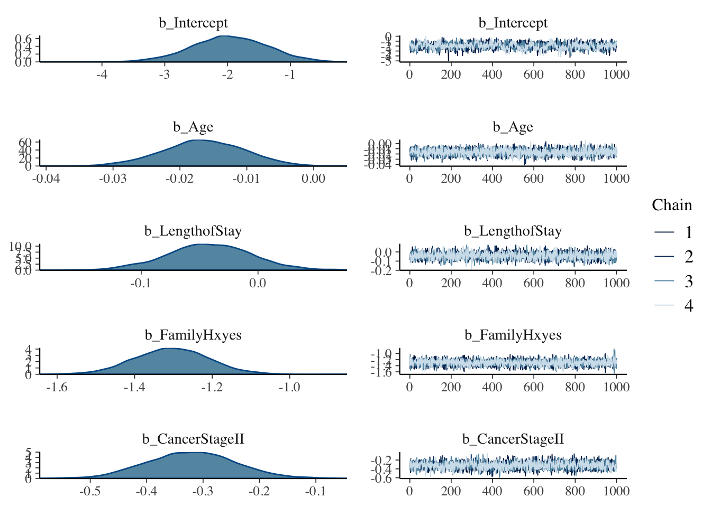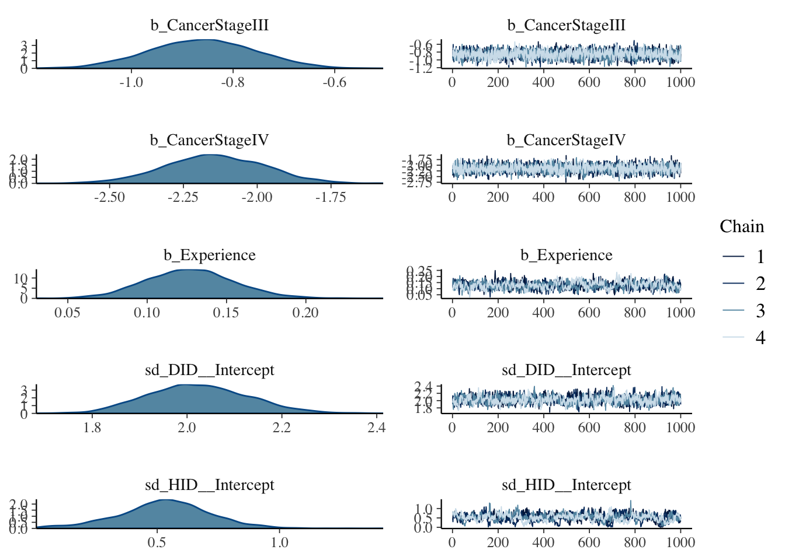
If you compare the resulting plots to those that we found last time using glmer() you ll be surprised to find out how some CIs have changed once we are in a Bayesian setting.
#Can also check ME
brms::marginal_effects(mod, ask = FALSE)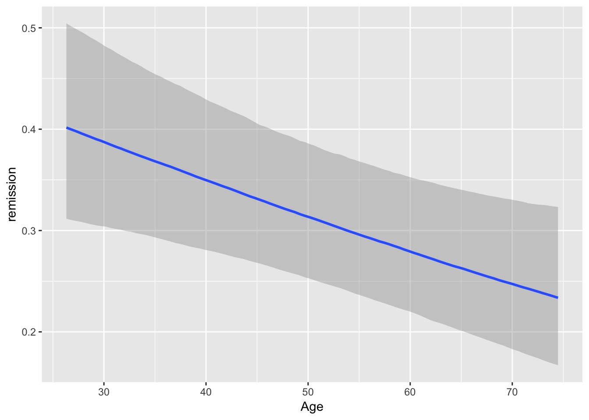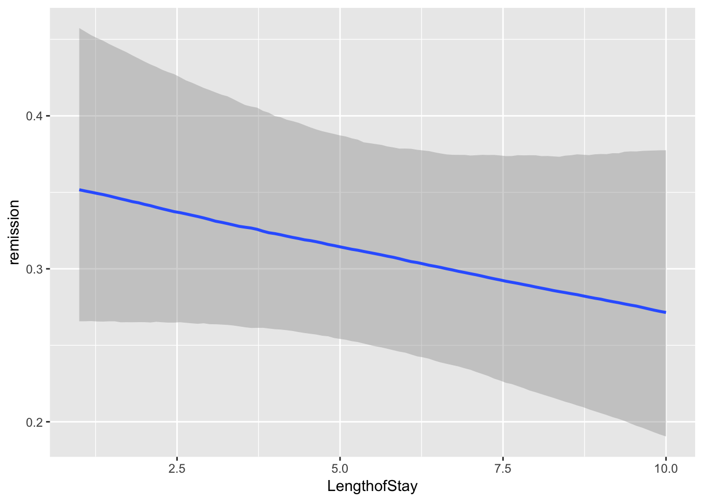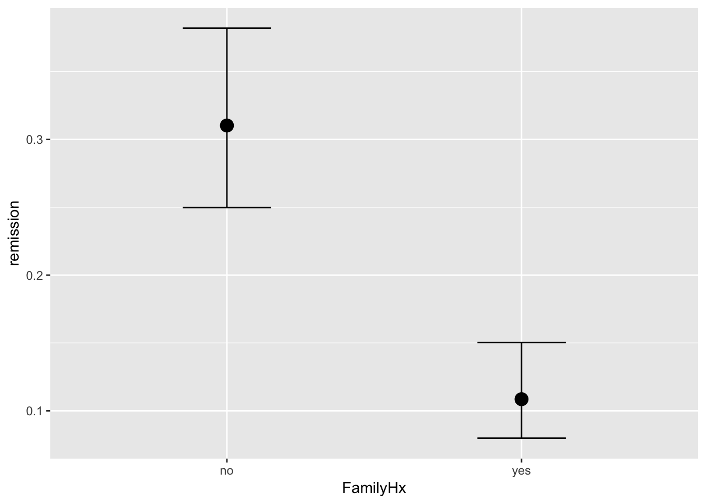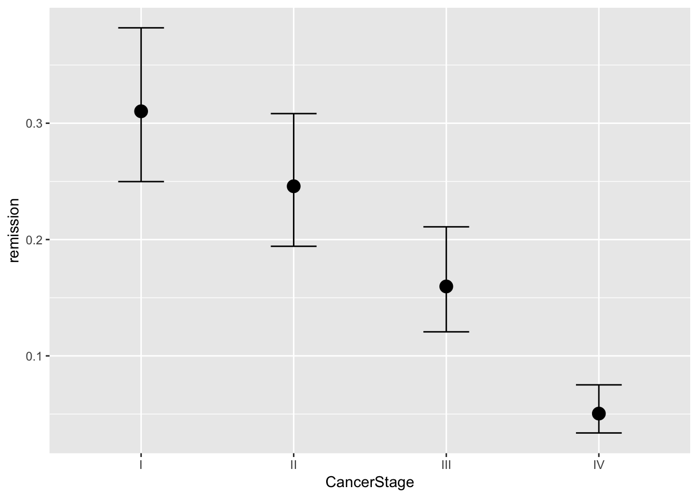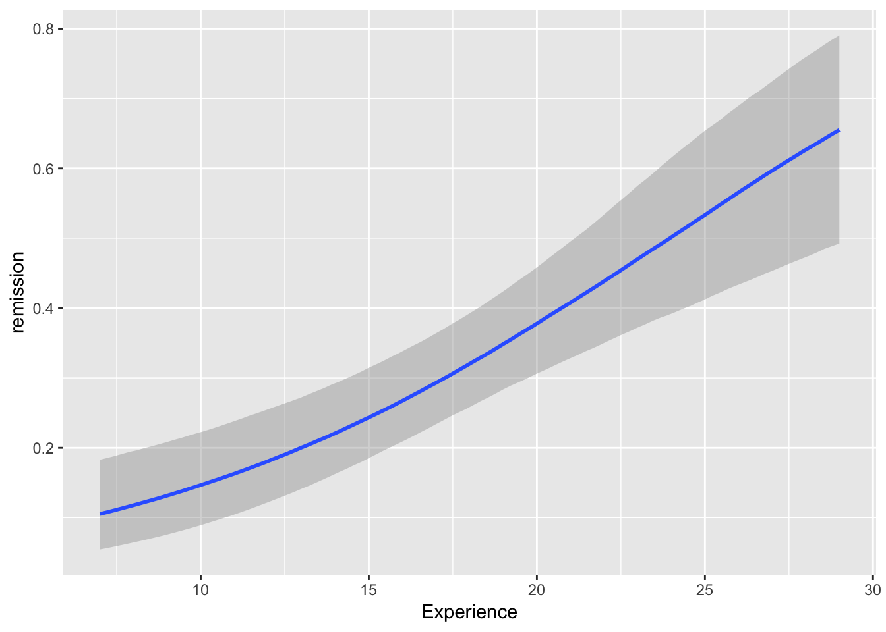
You will note that at overall, the results are quite similar when it comes to coefficients. However, we may find that our uncertainty is estimated with more information in mind here. If you have faith in Bayesian thinking, then consequently you will have more faith in the above results or vice versa :)